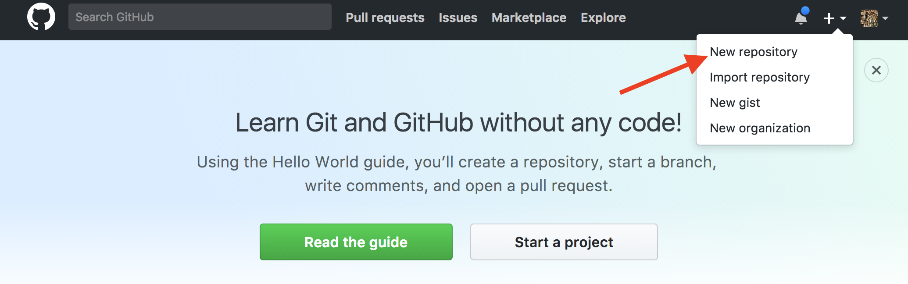
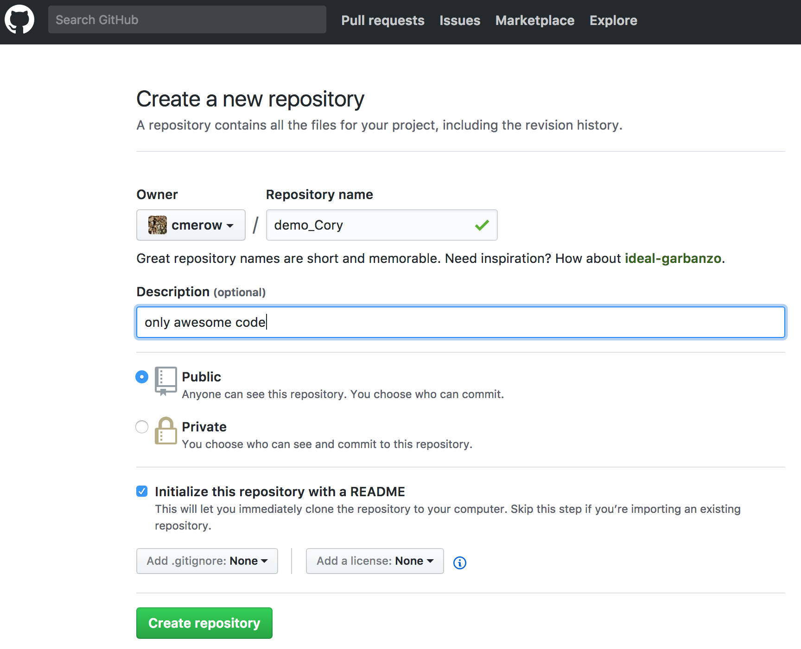
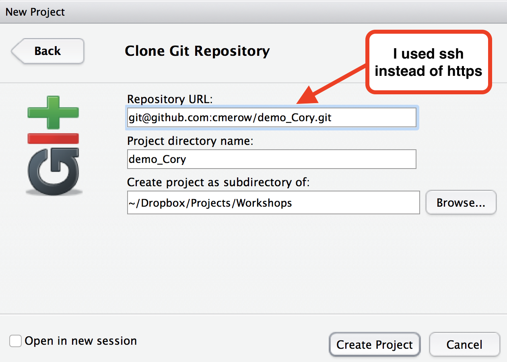
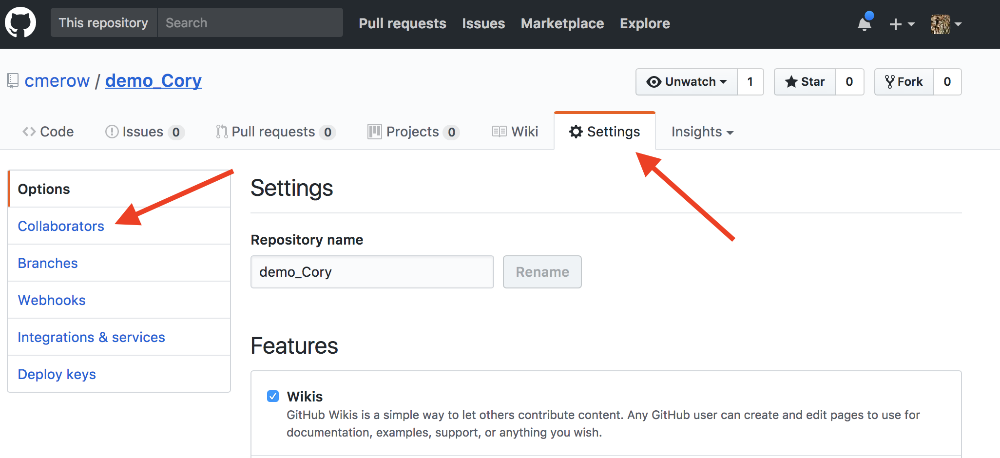
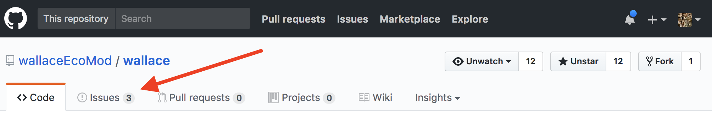

Version Control (with Git)
Cory Merow & Adam Wilson
9/19/2017
This tutorial is a quick start guide to sharing your code on github using Rstudio. Command line is optional.
1 Git to manage ‘versions’ of files
Similar to ‘track-changes’ in Microsoft Word, Git keeps track of any edits and makes it possible to track who made the change and when. Git is most commonly used to manage collaboratively edited code, but it can keep track of any file.
2 Version Control
2.1 Tracking changes with version control
Payoffs
- Eases collaboration
- Can track changes in any file type (ideally plain text)
- Can revert file to any point in its tracked history
Costs
- Learning curve

RStudio ‘projects’ make version control & document preparation simple
2.2 Depositing code and data
Payoffs - Free space for hosting (and paid options) - Assignment of persistent DOIs - Tracking citation metrics
Costs - Sometimes license restrictions (CC-BY & CC0) - Limited or no private storage space


2.3 To share
 Stodden (IASSIST 2010) sampled American academics registered at the Machine Learning conference NIPS (134 responses from 593 requests (23%). Red = communitarian norms, Blue = private incentives
Stodden (IASSIST 2010) sampled American academics registered at the Machine Learning conference NIPS (134 responses from 593 requests (23%). Red = communitarian norms, Blue = private incentives
2.4 Or not to share
 Stodden (IASSIST 2010) sampled American academics registered at the Machine Learning conference NIPS (134 responses from 593 requests (23%). Red = communitarian norms, Blue = private incentives
Stodden (IASSIST 2010) sampled American academics registered at the Machine Learning conference NIPS (134 responses from 593 requests (23%). Red = communitarian norms, Blue = private incentives
# Git Tutorial: let’s get started
2.5 Github
You can think of GitHub as part:
- Server to back up your files
- Website to share your files
- Method to track changes to your files
- Platform to collaboratively develop code (or other files)
2.5.1 Example: this course website is managed using Git & GitHub

2.6 Install Git on your computer
2.6.1 Windows and OSX
2.6.2 Linux
sudo apt-get install git or similar
2.7 Creating an account on GitHub
- Create a GitHub account at https://github.com/
- This will be a public account associated with your name
- Choose a username wisely for future use
- Don’t worry about details, you can fill them in later
- Create a repository called demo.YourName

* Add a brief and informative description * Choose “Public” * Check the box for “Initialize this repository with a README” 3. Click “Create Repository”

2.8 In RStudio: clone the repository
Go to RStudio
- File -> New Project
- Version Control: Checkout a project from a version control repository
- Git: Clone a project from a repository
Fill in the info:
- URL: use HTTPS address
- Create as a subdirectory of: Browse and create a new folder, usually with the same name as your repo (demo_YourName)

2.9 Commit (save) to GitHub from within RStudio
2.9.1 Steps:
- Edit: make changes to a file in the repository you cloned above
- Stage: tell git which changes you want to commit (save)
- Commit (with a message saying what you did - you can’t skip this!)
- Push: send the updated files to GitHub
The 3 states of files: Staged, Modified, Committed 
The important stuff is hidden in the .git folder (which might be hidden on your computer)
2.10 Staging

Select which changed files (added, deleted, or edited) you want to commit. Staging allows you to choose just a certain subset of modified files to associate with a commit. (If you always save all your changes in the same commit, this maybe isn’t intuitive…)
2.11 Committing

Add a commit message and click commit.
2.12 Syncing (push)

Click the green arrow to sync with GitHub.
2.13 Add your Rmd
Try adding the Rmd (and associated .md, R, files) you created in the last tutorial (or any other Rmd) to your working folder and push it to github.
In case you don’t have one handy, use this the R Script associated with this page is available here.
2.14 Invite a collaborator
Now add another github user to your repo (e.g. the person sitting next to you).

Practice modifying a file and pushing it to one another’s repos.
2.15 Conflicts
A conflict can occur if two people simultaneously edit the same file and haven’t pushed it. This can be resolved by merging if the bits of code don’t overlap, but requires someone to choose which version of the code to keep if they do overlap. Either avoid working on the same bits of code simultaneously, or read on to learn more advanced git functions.
2.16 Tips
- reference a specific line of code in a link by adding (e.g.) #L18 to the html address to go to line 18
- track ‘issues’ such as bugs or to-dos and track a discussion on them using github’s Issues tab

3 More git, if you’re bored
3.1 Git command line from RStudio
RStudio has limited functionality.

3.2 Git help
$ git help <verb>
$ git <verb> --help
$ man git-<verb>For example, you can get the manpage help for the config command by running git help config
3.3 Git status

Similar to info in git tab in RStudio
3.4 Git config
git config shows you all the git configuration settings:
user.emailremote.origin.url(e.g. to connect to GitHub)
3.5 Branching
Branches used to develop features isolated from each other. 
Default: master branch. Use other branches for development/collaboration and merge them back upon completion.
3.6 Basic Branching
$ git checkout -b devel # create new branch and switch to it
$ git checkout master #switch back to master
$ git merge devel #merge in changes from devel branchBut we won’t do much with branching in this course…
3.6 Command line git
Take 15 minutes or so at this site to walk through some basic git commands


3.8 Philosphy
Remember, the data and code are real, the products (tables, figures) are ephemeral…
3.9 Colophon
- Slides based on Ben Marwick’s presentation to the UW Center for Statistics and Social Sciences (12 March 2014) (OrcID)
- Git Slides based on materials from Dr. Çetinkaya-Rundel